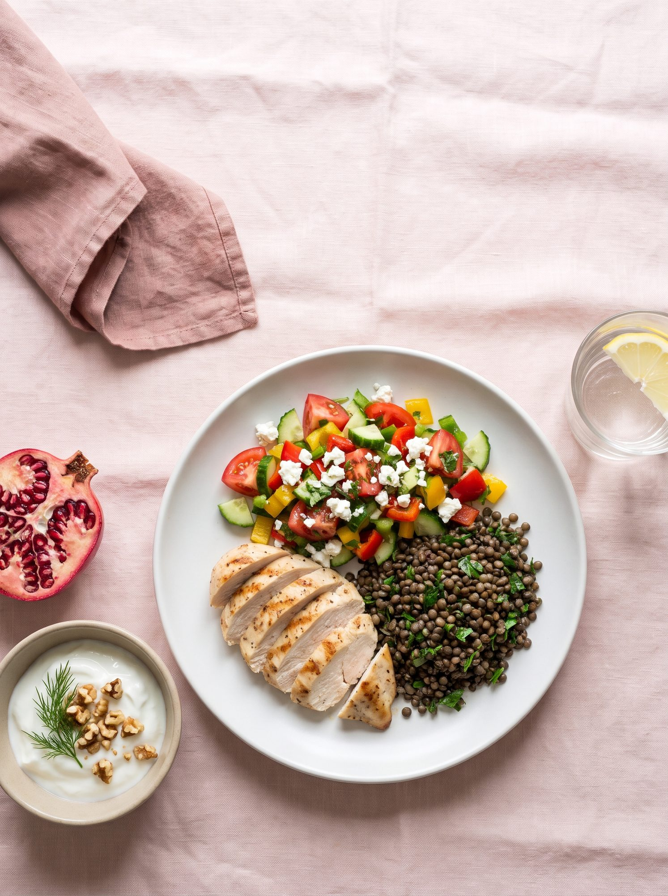
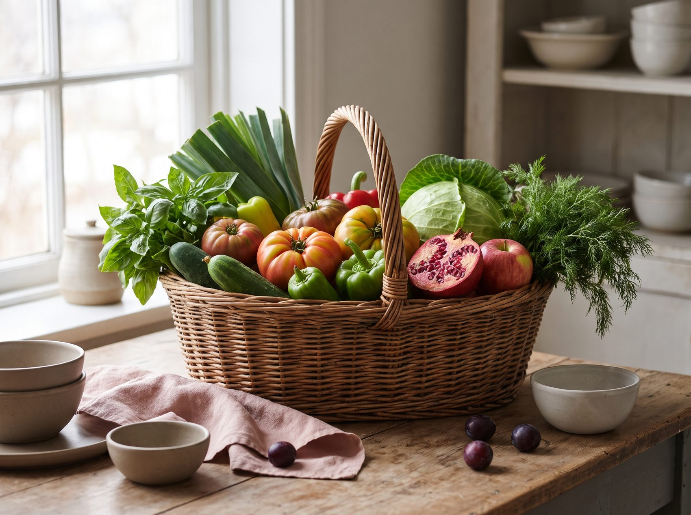
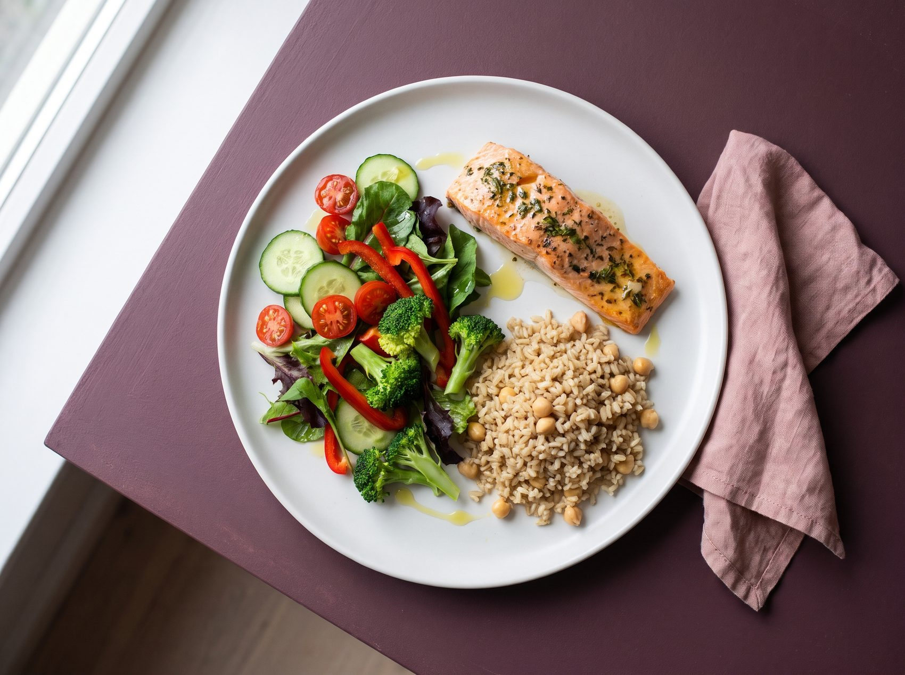
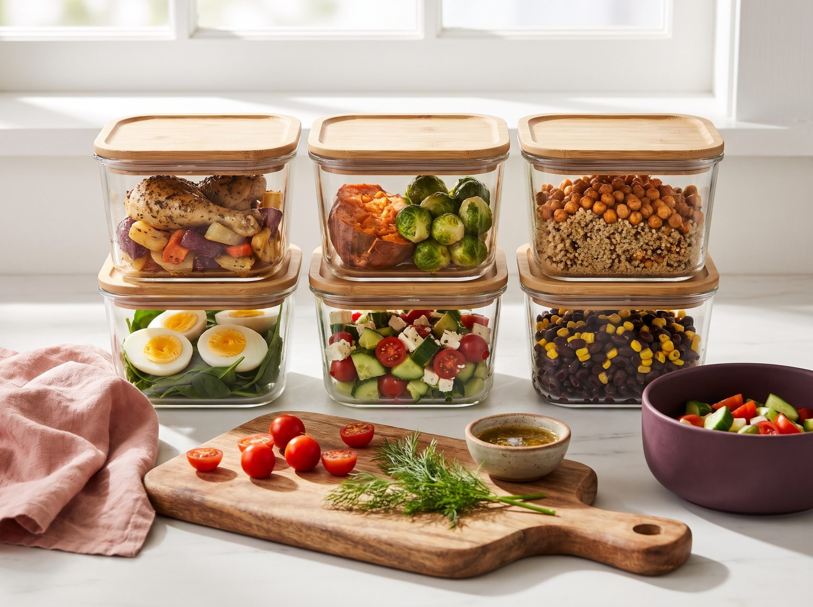
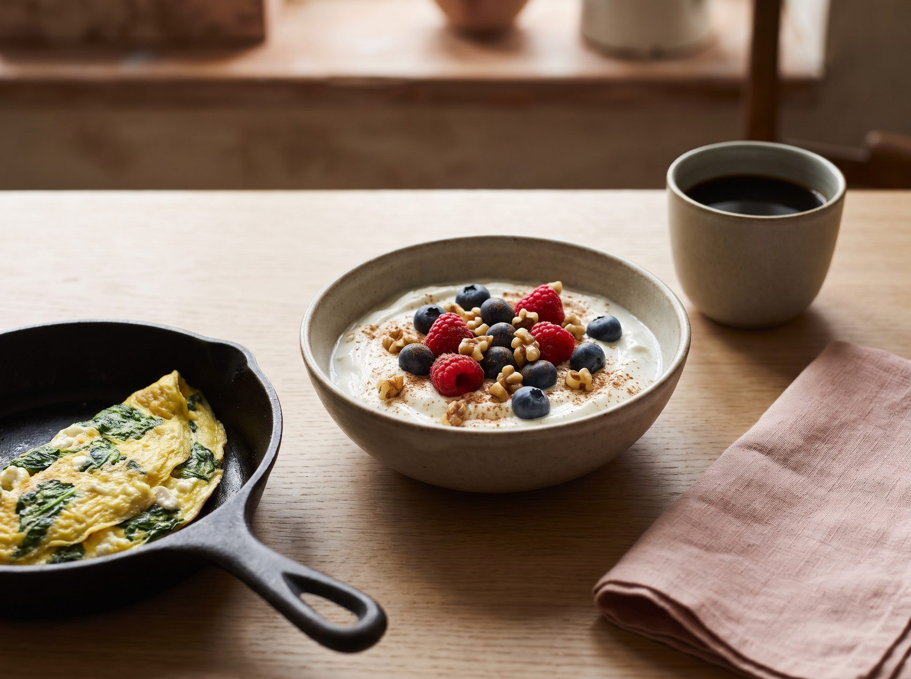
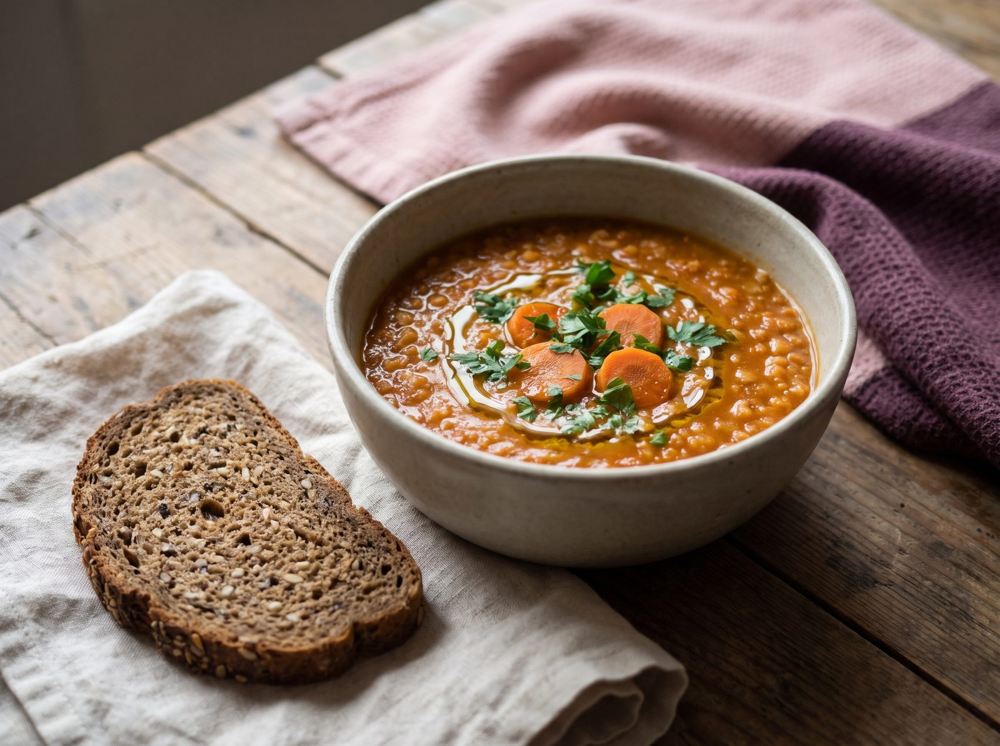
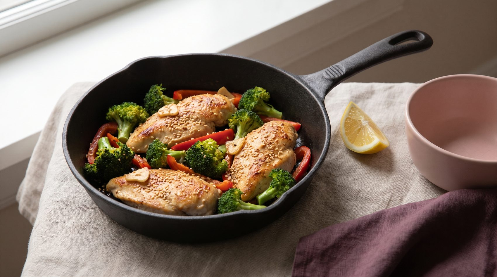
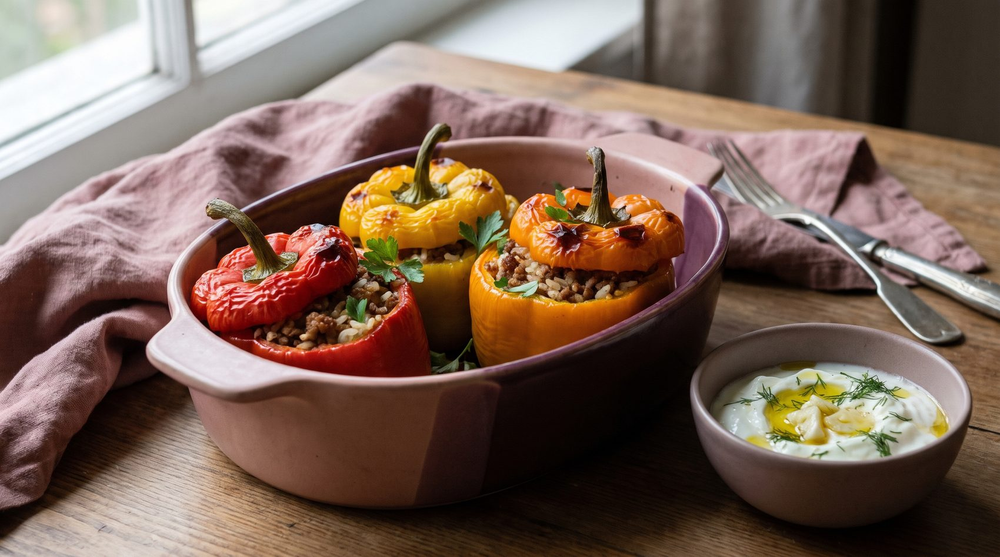
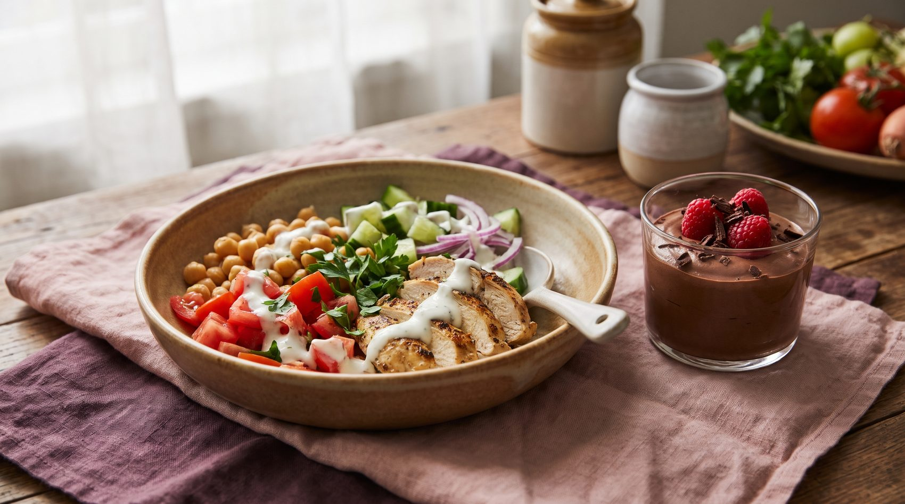
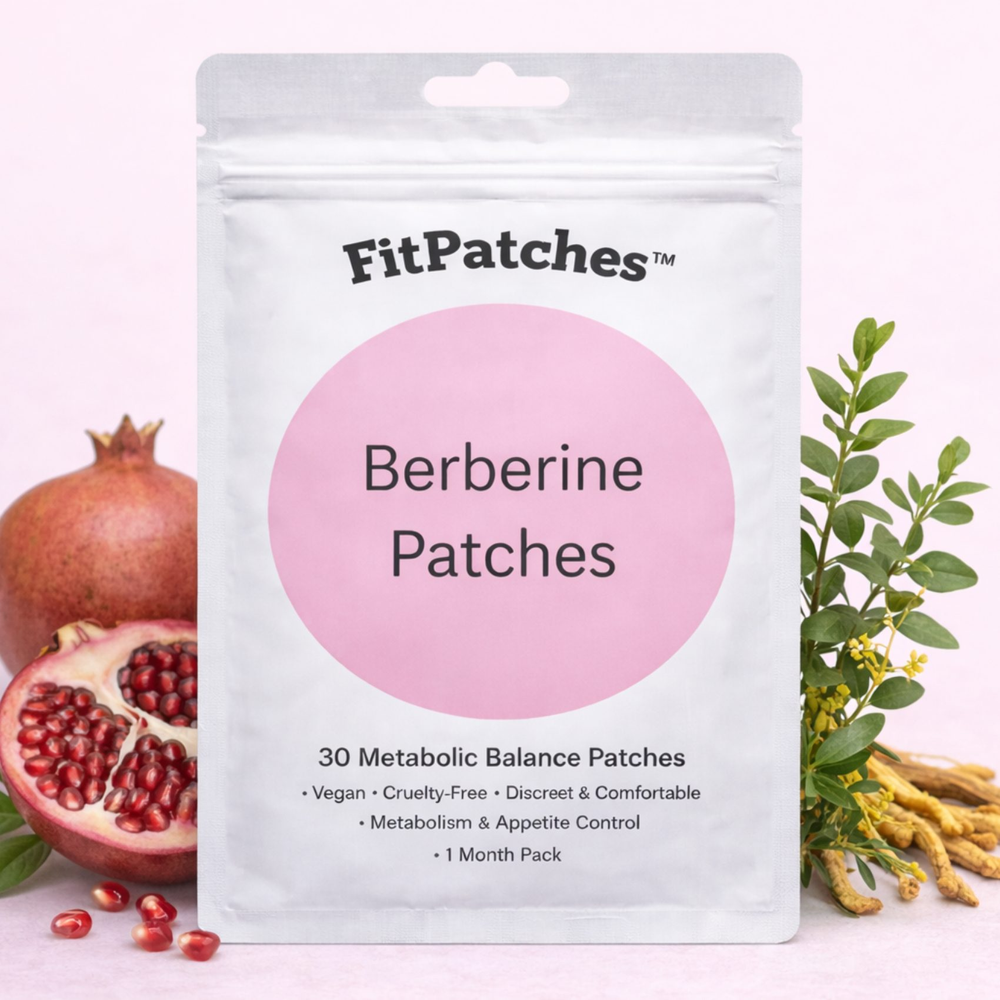

Най-важното от 10 световни бестселъра за хранене, отслабване и навици, събрано в една проста система за 30 дни.
Ако държиш тази книга, значи вече си направила първата крачка. И този път наистина ще е различно, защото няма да започваш поредната диета.
Диетите искат от теб сила на волята: забрани, гладуване, броене на всяка калория. Издържаш две-три седмици, животът се намесва и килограмите се връщат. Това не е твой провал, а провал на подхода.
Този план иска нещо много по-лесно: малки промени, по една на ден, които с времето се натрупват. Вместо забранени храни избираш по-добри варианти. Вместо да гладуваш, ядеш чинии, които те засищат за часове.
Прегледахме идеите на десет от най-влиятелните книги за хранене, отслабване и навици, от „Кодът на затлъстяването“ до „Атомни навици“. Взехме само онова, което се повтаря отново и отново, подкрепено е от науката и работи в истинския живот: с работа, деца, гости и баница в неделя.
Сложи лепенката FitPatches, изпий чаша вода, закуси с протеин. Три действия, едно след друго, всяка сутрин. Така се гради навик, без да мислиш за него.
Свикваш с новия ритъм. Закуската те държи сита до обяд, а следобедният глад отслабва.
Енергията е по-стабилна, желанието за сладко намалява, а първите сантиметри от талията си отиват.
Навиците стават автоматични. При темпо 0,5–1 кг седмично това са 2–4 кг за месец, които не се връщат.
Тази книга е с информационна цел и не замества съвет от лекар. Ако имаш заболяване, приемаш лекарства, бременна си или кърмиш, говори с лекаря си, преди да промениш храненето си. Повече на стр. .

Преди да промениш чинията си, разбери защо тялото ти реагира така, както реагира. Когато знаеш „защо“, „как“ става много по-лесно.
Повечето хора, които отслабват с рестриктивна диета, си връщат голяма част от килограмите в следващите години. Причината не е липсата на воля. Причината е, че диетите се борят с биологията, вместо да работят с нея.
При драстично орязване на храната тялото усилва сигнала за глад (грелин) и отслабва сигнала за ситост (лептин). Гладът расте, докато волята се изчерпа.
Бързите въглехидрати вдигат кръвната захар рязко, след което тя пада. Сривът носи умора, раздразнителност и силно желание за сладко, обикновено около 15–16 ч.
Повечето решения за храна вземаме на автопилот. Ако вафлата е пред очите ти, а зеленчуците трябва да се мият и режат, средата печели всеки път.
Илюстративна схема на кръвната захар през деня.
Милиони продадени копия, десетки години изследвания. Ето основната идея на всяка книга и какво взимаме от нея в нашия план.
Наднорменото тегло не е само въпрос на калории, а и на хормони, най-вече на инсулина. Постоянното похапване държи инсулина висок и тялото трудно стига до мастните си запаси.
Резките скокове и сривове на кръвната захар водят до глад, умора и желание за сладко. Няколко прости трика изглаждат кривата, без да се отказваш от любимите си храни.
Цялата наука за храненето в седем думи: „Яж храна. Не твърде много. Предимно растения.“ Истинската храна е тази, която прабаба ти би разпознала.
Ситостта зависи до голяма степен от обема на храната, а не само от калориите. Храните с много вода и фибри (зеленчуци, супи, плодове) засищат с по-малко калории. Супа преди основното ястие намалява изяденото с около 20%.
В местата с най-много дълголетници хората ядат предимно растения и бобови, движат се естествено през целия ден и спират да се хранят, когато са сити на 80%.
Чревните бактерии се хранят с фибри. Колкото по-разнообразни растения ядеш, толкова по-разнообразен е микробиомът ти. Това е свързано с по-добро храносмилане, ситост и метаболизъм.
Ултрапреработените храни са създадени да се ядат бързо и в големи количества. В контролирано проучване хората изяждат около 500 ккал повече на ден, когато менюто им е ултрапреработено.
Мозъкът ни е програмиран да търси силно „възнаграждаваща“ храна: сладко, мазно и солено едновременно. Когато такава храна е пред очите ни, волята почти винаги губи.
Недоспиването разбърква хормоните на глада. Изследванията показват, че след кратък сън хората изяждат средно с няколкостотин калории повече на следващия ден и посягат към по-сладко.
Големите резултати идват от малки навици, повтаряни всеки ден. Закачи новия навик за стар („след като… ще…“) и го направи очевиден, лесен и приятен.
Никоя от тези книги не препоръчва гладуване или забрана на цели групи храни. Всички стигат до едно: истинска храна, протеин и растения, стабилна кръвна захар, сън и малки навици.
Ако запомниш само една страница от тази книга, нека е тази. Всяко правило идва от поне една от книгите, а заедно правят системата.
Половин чиния зеленчуци, четвърт протеин, четвърт сложни въглехидрати и палец мазнина. Без кантар и без броене.
25–30 г протеин на хранене (около една длан). Протеинът засища най-силно и пази мускулите, докато отслабваш.
Зеленчуци → протеин → въглехидрати. Същата храна, но с по-плавна кръвна захар и по-дълга ситост.
Без постоянно похапване. Ако огладнееш, имаш една планирана закуска. Между вечерята и закуската минават поне 12 часа.
1,5–2 л вода и неподсладени напитки на ден. Без газирани напитки, сокове и сладки кафета.
10 минути разходка след най-голямото хранене. Мускулите използват захарта, вместо тя да се складира.
7–9 часа сън. При стрес отиди на разходка, подиши или се обади на приятелка, вместо да отваряш хладилника.
80%: спирай, когато си приятно сита, а не препълнена.
Никога два пъти подред: едно „провалено“ хранене е нищо. Важно е следващото.

Без кантар, без приложения, без забранени храни. Само чиния, ръка и няколко прости правила, които работят у дома, на работа и на гости.
Забрави броенето на калории. Чинията и ръката ти са всичко, от което имаш нужда. Работи за обяд и вечеря, у дома и в ресторанта.
Ръката ти е винаги с теб и е пропорционална на тялото ти. За жени ориентирът е по една порция от всяко на основно хранене.
| Група | Мярка | Примери за една порция |
|---|---|---|
| Протеин | 1 длан (размер и дебелина) | 120–150 г пилешко или риба · 2–3 яйца · 200 г извара · 1 купичка леща. Около 25–30 г протеин. |
| Зеленчуци | 2 юмрука | Голяма салата · купа задушени зеленчуци · купа супа |
| Въглехидрати | 1 свита шепа | 3–4 с.л. сварен ориз или булгур · 1 средно картоф · 1 филия пълнозърнест хляб · 40 г овесени ядки |
| Мазнини | 1 палец | 1 с.л. зехтин · 10–15 ядки · ¼ авокадо · 6–8 маслини |
Тренираш интензивно или работата ти е физическа? Добави още една шепа въглехидрати след тренировка. Закуската следва същата логика: протеин + зеленчуци или плод + малко въглехидрати.
Не е нужно да спираш любимите си храни. Достатъчно е да промениш кога и как ги ядеш. Така кривата на кръвната захар става плавна, а с нея и апетитът.
Яйца, извара, сирене, зеленчуци вместо кифла, мюсли с мед или фреш. Сладката закуска пуска влакчето още от 8 сутринта.
Започвай обяда и вечерята със салата или зеленчукова супа. Фибрите покриват стомаха като мрежа и забавят усвояването на захарта.
Същата чиния, изядена в този ред, дава значително по-нисък скок на кръвната захар, отколкото ако започнеш с хляба (Diabetes Care, 2015).
Никога не яж въглехидрат сам. Ябълка + шепа ядки. Хляб + яйце или сирене. Плод + кисело мляко.
Ако ще хапнеш нещо сладко, нека е веднага след обяда, а не самостоятелно в 16 ч на празен стомах.
Разходка, разтребване, стълби. Мускулите използват захарта като гориво. Дори 2–5 минути леко ходене помагат (мета-анализ, 2022).
1 с.л. ябълков оцет в голяма чаша вода, 10–15 минути преди хранене с повече въглехидрати. Пий със сламка, за да пазиш зъбите. Пропусни, ако имаш киселини, гастрит или язва.
Без резки скокове и сривове няма внезапен глад и „трябва ми нещо сладко веднага“. Ядеш по-малко, без да се насилваш.
Тук няма забранени храни. Има храни за всеки ден, храни с мярка и храни за специални поводи. Правилото е просто: 80% зелено и жълто, до 20% червено.
Домати, краставици, чушки, листни салати, спанак, тиквички, броколи, карфиол, зеле, моркови, гъби, патладжан, праз, лук, чесън
Яйца, пилешко и пуешко месо, риба (скумрия, сьомга, пъстърва, хек), риба тон в собствен сос, извара, цедено и обикновено кисело мляко, леща, боб, нахут
Вода, минерална вода, билкови и зелени чайове, кафе без захар, лимон, ябълков оцет, подправки и пресни билки
Пълнозърнест и ръжен хляб, овесени ядки, кафяв ориз, булгур, елда, киноа, варени и печени картофи, пълнозърнести макарони
Плодове (2–3 порции на ден, цели, а не сок), бяло сирене, кашкавал, пълномаслено мляко
Зехтин, ядки, семена, авокадо, маслини, черен шоколад над 70%, червено месо 1–2 пъти седмично, мед (1 ч.л.)
Газирани напитки, сокове и нектари, енергийни напитки, сладки кафета със сиропи, алкохол
Баница, кроасани, вафли, бисквити, торти, пица, бели тестени изделия, закуски от пекарната
Колбаси, салами, наденици, чипс, солети, майонезени салати, пържени храни, „диетични“ продукти с дълъг състав
Как да ядеш „червено“, без да се проваляш: планирай го (например неделя), яж го седнала и бавно, след основно хранене, и се наслаждавай. Едно парче баница не разваля нищо. Разваля го мисълта „вече провалих деня, дай да изям всичко“.
Това са двата най-силни „засищащи“ елемента в храната. Много жени ядат твърде малко и от двете, а после се чудят защо са гладни в 11 ч.
Цел: 25–30 г на всяко основно хранене. При отслабване ориентирът е около 1,2–1,6 г на килограм тегло на ден, т.е. за 70 кг са около 85–110 г.
| Храна и порция | Протеин |
|---|---|
| Пилешко филе, 100 г готово | ~31 г |
| Риба тон, 1 консерва (120 г) | ~28 г |
| Постно телешко, 100 г готово | ~26 г |
| Сьомга, 120 г | ~25 г |
| Извара, 200 г | ~22 г |
| Скумрия, 120 г | ~22 г |
| Цедено кисело мляко, 200 г | ~18 г |
| Леща, 200 г сварена | ~18 г |
| Тофу, 150 г | ~18 г |
| Бял боб, 200 г сварен | ~15 г |
| Нахут, 150 г сварен | ~13 г |
| Бяло сирене, 50 г | ~8 г |
| Кисело мляко 2%, 200 г | ~7 г |
| Яйце, 1 бр. (L) | ~6 г |
Цел: 25–30 г на ден. Повечето хора ядат по-малко от това. Увеличавай постепенно и пий повече вода, за да няма подуване.
| Храна и порция | Фибри |
|---|---|
| Леща, 200 г сварена | ~16 г |
| Бял боб, 200 г сварен | ~13 г |
| Нахут, 150 г сварен | ~11 г |
| Малини, 125 г | ~8 г |
| Круша, 1 средна | ~5 г |
| Броколи, 200 г | ~5 г |
| Овесени ядки, 50 г | ~5 г |
| Авокадо, ½ | ~5 г |
| Ябълка с кората, 1 средна | ~4 г |
| Бадеми, 30 г | ~4 г |
| Пълнозърнест хляб, 1 филия | ~3 г |
| Ленено семе, 1 с.л. смляно | ~3 г |
Лесен ден с 30 г фибри: овесена каша с малини и ленено семе (16 г) + леща чорба (8 г) + ябълка (4 г) + голяма салата (3 г).
Стойностите са приблизителни и варират според продукта и начина на приготвяне. При бъбречно заболяване обсъди приема на протеин с лекар.
Не махаш нищо. Просто сменяш. Всяка размяна спестява от 100 до 400 ккал и цял следобеден захарен срив.
| Вместо това… | …опитай това |
|---|---|
| Баница или кроасан за закуска | 2–3 яйца, сирене и домати или нощна овесена каша (рец. 2) |
| Бял хляб към всяко ядене | 1 филия пълнозърнест или ръжен хляб, само към едно хранене |
| Газирана напитка, сок, нектар | Газирана вода с лимон и мента, неподсладен студен чай |
| Кафе с 2 захарчета и сметана | Кафе с мляко и канела. Намалявай захарта с по половин лъжичка седмично. |
| Вафла или шоколадче в 15 ч | Кисело мляко с какао и канела, ябълка с шепа ядки или шоколадов мус (рец. 10) |
| Чипс пред телевизора | Морковчета и краставици с хумус, домашни пуканки без масло |
| Майонезена салата | Салата с цедено кисело мляко, лимон и копър |
| Пържени картофи | Картофи на фурна с малко зехтин, чубрица и червен пипер |
| Колбаси и салам за сандвич | Печено пилешко, яйце, риба тон или извара с билки |
| Плодово кисело мляко със захар | Обикновено кисело мляко с пресни плодове и канела |
| Чаша вино всяка вечер | Вино само в петък и събота, с храна и с чаша вода до него |
| Десерт от сладкарницата | 2 квадратчета черен шоколад над 70% с чай от мента |

Четири седмици, всяка с един фокус. Всеки ден има по една малка задача, която надгражда предишната. Не е нужно да правиш всичко наведнъж, само днешната стъпка.
Всяка седмица добавя нов слой, без да маха предишния. Навиците от Седмица 1 остават и в Седмица 4. Затова планът работи и след 30-ия ден.
Вода, протеинова закуска, без течна захар, половин чиния зеленчуци и кухня, която ти помага.
Резултат: по-малко глад между храненията.
Редът на храненето, разходка след хранене, край на похапването и 12-часова нощна пауза.
Резултат: по-стабилна енергия, по-малко желание за сладко.
30 растения седмично, бобови, по-малко ултрапреработено, готвене за няколко дни напред.
Резултат: по-добро храносмилане и ситост за часове.
Правилото на 80%, сън, стрес, сила, хранене навън и твоят личен правилник.
Резултат: система, която продължава и след 30-ия ден.
Отдели 1 час през уикенда. Добрата подготовка е половината успех.
Всеки ден има една нова задача. Задачите от предишните дни продължават. Ако някой ден не успееш, не започвай отначало. Просто продължи със следващия.
Под всяка задача е посочено от коя книга идва идеята.
Пропуснат ден е нормален. Два пропуснати дни подред са началото на нов (стар) навик. Затова след всяко „подхлъзване“ следващото хранене е по плана. Без компенсации и без гладуване.
Фокус: малки промени, които веднага намаляват глада и празните калории. Нищо сложно, никакви забрани.
Направи измерванията (стр. ): тегло, талия, ханш и снимка в цял ръст. Сложи първата лепенка. Запиши в едно изречение защо го правиш.
Чаша вода веднага след събуждане и по една преди всяко хранене. Сложи бутилката на бюрото, на видно място. Често „гладът“ е всъщност жажда.
Закуска с поне 20–25 г протеин: яйца, извара, цедено мляко (рецепти 1 и 2). Забележи колко по-късно огладняваш.
Без газирани напитки, сокове, нектари и сладки кафета. Замени ги с минерална вода с лимон, чай или кафе с мляко и канела.
На обяд и вечеря половината чиния е зеленчуци. Не ти се реже? Замразените смеси и готовите салати са напълно наред.
Скрий от погледа сладкото и солените снаксове (или ги раздай). На масата сложи купа с плодове, а в хладилника на предния ред: нарязани зеленчуци и варени яйца.
Избери 3 рецепти за следващата седмица, направи пазарен списък и напазарувай. Оцени от 1 до 10 енергията, съня и желанието за сладко.
Край на седмицата. Кое беше най-лесно? Кое най-трудно? Каква е една малка пречка, която можеш да махнеш следващата седмица?
Фокус: изглаждаме „захарните влакчета“. Целта: по-малко следобеден глад и по-малко нужда от сладко.
На обяд и вечеря яж първо зеленчуците, после протеина, а въглехидратите накрая. Същата храна, друг ефект.
След най-голямото хранене се разходи 10 минути. Обади се на някого, разходи кучето, слез до магазина пеша.
3 хранения и най-много една планирана закуска (кисело мляко, ядки, плод с протеин). Между тях вода, чай, кафе без захар.
Например от 19:30 до 7:30 без храна. Кухнята „затваря“ след вечеря. Ритуал за затваряне: измий зъбите си веднага след вечеря.
Никакъв въглехидрат сам. Плод с ядки или кисело мляко. Хляб с яйце или сирене. Картофи със салата и риба.
Ако обикновено те „напада“ глад около 15–16 ч, подготви си закуска предварително: цедено мляко с какао, ябълка с ядки или извара. Решението е взето, преди да огладнееш.
Отбележи в тракера колко дни си изпълнила всеки навик. Избери един навик, който вече е лесен, и един, на който ще обърнеш внимание следващата седмица.
Ако имаш киселини или стомашни проблеми, пропусни оцета от стр. . Всичко останало от тази седмица е безопасно и подходящо за всички.
Фокус: не само колко, а какво ядеш. Повече разнообразие, повече растения, по-малко фабрично приготвена храна.
Измери талията и ханша и се претегли (стр. ). Сравни сантиметрите, не само кантара: мускулите и водата могат да скрият напредъка на везната.
Започни да броиш различните растителни храни за седмицата: зеленчуци, плодове, бобови, ядки, семена, пълнозърнести, подправки. Всяко различно растение е +1.
Леща, боб или нахут като основа на поне едно хранене (рецепти 3, 7 и 9). Евтини, засищащи, с много протеин и фибри.
Прочети етикетите на 5 продукта, които купуваш редовно (стр. ). Замени поне един ултрапреработен с по-чиста версия.
Един час в кухнята: изпечи пилешко, свари леща или булгур, сварете яйца, нарежи зеленчуци. Подреди в кутии. Когато здравословното е готово, изборът е лесен.
Започни обяда или вечерята с купа зеленчукова супа или голяма салата. Така на основното ястие изяждаш естествено по-малко.
Шепа ядки (около 30 г) и 1 с.л. смляно ленено семе в закуската. Полезни мазнини, фибри и ситост за часове.
Моят брой растения тази седмица: ________ / 30 · Нова храна, която опитах: ______________________
Фокус: всичко, което прави резултатите трайни: ситост без преяждане, сън, стрес, сила и свобода да живееш нормално.
Спри, когато си „приятно сита“, а не „препълнена“. Остави вилицата между хапките, а последните 2–3 хапки ги прибери за после.
Цел: 7–9 часа. Без екран 30 минути преди сън, стаята хладна и тъмна, лягай по едно и също време.
Направи списък с 3 неща, които те успокояват и не са храна: разходка, вана, музика, дишане 4-7-8 (вдишай за 4, задръж за 7, издишай за 8).
Прочети стратегията за ресторанти и гости (стр. ). Първо салата, после протеин, една чиния, без „вече провалих деня“.
Вкъщи, без уреди: 3 кръга × 10 клека, 8 напада на крак, 10 лицеви опори на стена, 20 секунди планк. Мускулите са най-добрият ти съюзник в метаболизма.
Без телефон и телевизор. Дъвчи бавно, забележи вкуса. Сигналът за ситост стига до мозъка след около 20 минути.
Включи любимата си храна от „червеното“ в малка порция, седнала, след основно хранене и с удоволствие. Без вина. Така се гради свобода, а не рестрикция.
Запиши 5-те навика от плана, които ще пазиш завинаги. Те са твоята система след 30-ия ден.
Измервания и снимка в същата поза и светлина като на Ден 1. Сравни. Отпразнувай с нещо, което не е храна: нови дрехи, масаж, разходка сред природата. После виж плана за дни 31–90 (стр. ).
За примерното меню за един човек за една седмица. Отметни какво вече имаш и вземи телефона със себе си, за да снимаш тази страница.
Пазарувай сита и със списък. Обикаляй периферията на магазина (пресни продукти), а средните рафтове с пакетирани храни прескачай.




Леща, боб, гювечи, чорби, шопска салата, таратор, кисело мляко, сирене: традиционната ни кухня е пълна с бобови, зеленчуци и ферментирали млечни продукти. Нужно е само по-малко мазнина в тенджерата, повече зеленчуци в чинията и хлябът да е само една филия.

Хранителните стойности са ориентировъчни, на порция, и зависят от конкретните продукти.
Животът няма да спре за 30 дни. Ето готови решения за ситуациите, в които повечето планове се провалят.
Провери протеина на обяд и вечеря: по 25–30 г. Вечеря само от салата не държи. „Затвори“ кухнята с ритуал: зъби, чай от мента. Ако все пак си гладна, хапни кисело мляко или извара, а не сладко.
Обядът ти е бил твърде лек или с твърде много въглехидрати. Добави протеин и зеленчуци, разходи се 10 минути след обяда и си приготви планирана закуска: шоколадов мус (рец. 10) или ябълка с ядки.
Не отивай прегладняла: изяж кисело мляко преди това. Поръчай протеин и салата, а гарнитурата да е зеленчуци. Една чиния, една филия хляб, чаша вода между чашите алкохол. Десерт? Раздели го с някого.
Това е нормално след 2–4 седмици. Провери порциите (особено мазнините и въглехидратите вечер), съня и стреса. Измери талията: често сантиметрите падат, докато кантарът стои. Добави 15 минути сила.
Едно хранене не разваля седмица. Важи правилото „никога два пъти подред“: следващото хранене е по плана. Без наказване с гладуване, защото то води до ново преяждане.
Гладът наистина е по-силен и това не е слабост. Повече протеин и сложни въглехидрати, повече сън, разходка навън. Позволи си 2 квадратчета черен шоколад вместо цяла кутия бонбони.
Готви за 3 дни наведнъж (Ден 19). Използвай „бързите помощници“: замразени зеленчуци, готови салати, печено пиле от магазина, риба тон, буркан боб или нахут, яйца.
Не налагай, а готви вкусно за всички, защото рецептите са обикновена домашна храна. Помоли само за едно: сладкото да стои в шкаф, а не на масата.
Разпечатай страницата и я закачи на хладилника. Отмятай всяка вечер. Целта не е 100%, а повече отметки от миналата седмица. Не прекъсвай веригата два дни подред.
| Навик · Дни 1–15 | 1 | 2 | 3 | 4 | 5 | 6 | 7 | 8 | 9 | 10 | 11 | 12 | 13 | 14 | 15 |
|---|---|---|---|---|---|---|---|---|---|---|---|---|---|---|---|
| Лепенка FitPatches | |||||||||||||||
| Вода 1,5–2 л | |||||||||||||||
| Протеин на всяко хранене | |||||||||||||||
| ½ чиния зеленчуци | |||||||||||||||
| Без течна захар | |||||||||||||||
| Разходка след хранене | |||||||||||||||
| 12 ч нощна пауза | |||||||||||||||
| Сън 7+ часа | |||||||||||||||
| Задачата на деня |
| Навик · Дни 16–30 | 16 | 17 | 18 | 19 | 20 | 21 | 22 | 23 | 24 | 25 | 26 | 27 | 28 | 29 | 30 |
|---|---|---|---|---|---|---|---|---|---|---|---|---|---|---|---|
| Лепенка FitPatches | |||||||||||||||
| Вода 1,5–2 л | |||||||||||||||
| Протеин на всяко хранене | |||||||||||||||
| ½ чиния зеленчуци | |||||||||||||||
| Без течна захар | |||||||||||||||
| Разходка след хранене | |||||||||||||||
| 12 ч нощна пауза | |||||||||||||||
| Сън 7+ часа | |||||||||||||||
| Задачата на деня |
Моята награда за 30 дни (не храна): ___________________________________________
Кантарът е само едно число. Сантиметрите, енергията и снимките често показват промяната по-рано и по-точно.
| Показател | Ден 1 | Ден 15 | Ден 30 | Ден 60 | Ден 90 |
|---|---|---|---|---|---|
| Дата | |||||
| Тегло (кг) | |||||
| Талия (см, на нивото на пъпа) | |||||
| Ханш (см, най-широката част) | |||||
| Бедро (см) | |||||
| Енергия (1–10) | |||||
| Качество на съня (1–10) | |||||
| Желание за сладко (1–10) | |||||
| Снимка ✓ |
Как да се измерваш: сутрин, след тоалетна и преди закуска, при едни и същи условия. Метърът е плътно до кожата, но не стяга. Снимките са на едно и също място, на същата светлина и в същите дрехи.
По идея от „Интуитивно хранене“ (Евелин Трибол и Елис Реш). Преди и по средата на всяко хранене се запитай: „Къде съм сега?“ Започвай да ядеш на 3–4. Спирай на 6–7.
Защо работи: когато влезеш в храненето на 1–2, мозъкът иска бързо и много и почти винаги стигаш до 8–9. Редовните хранения с протеин те държат в зелената зона.

Лепенките FitPatches с берберин и нар са създадени като удобно ежедневно допълнение към балансирания начин на живот. Без хапчета и без сложни режими.
Отлепи защитния слой и постави лепенката върху чиста, суха кожа, например на рамото или на китката.
Продължи деня си. Носи лепенката до 8 часа.
Свали я внимателно и сложи нова на следващия ден. Сменяй мястото, за да почива кожата.
В „Атомни навици“ Джеймс Клиър описва техниката „закачане на навици“: новият навик се свързва със стар, всеки ден в една и съща последователност.
Твоята формула: „След като сложа лепенката, изпивам чаша вода и закусвам с протеин.“
А лепенката на ръката ти цял ден е видимо напомняне, че днес е ден от плана.
След като ,
ще .
Лепенките са допълнение към храненето и движението, а не заместител. Не ги поставяй върху раздразнена или наранена кожа; при дразнене ги свали. Ако си бременна, кърмиш, приемаш лекарства (особено за кръвна захар или кръвно налягане) или имаш хронично заболяване, консултирай се с лекар преди употреба на продукти с берберин.
Чаша вода и лепенка FitPatches.
Солена закуска с протеин (рец. 1 или 2).
Вода или чай. Добрата закуска държи до обяд.
Обяд по чинията, зеленчуците първо. После 10 минути разходка.
Сваляш лепенката (около 8 часа).
Ако огладнееш, планирана закуска с протеин.
Вечеря по чинията.
Кратка разходка. Кухнята затваря.
Без екрани. 7–9 часа сън.
Първите 30 дни изграждат основата. Следващите 60 превръщат навиците в начин на живот. Изследванията върху навиците показват, че на нов навик му трябват средно около два месеца, за да стане автоматичен.
лепенки в един пакет = 30 дни
дни покрива пакетът 2+1, колкото целия план
дни покрива пакетът 3+2, с поддръжката
Не. Методът на чинията и ръката създава лек калориен дефицит естествено. Ако обичаш числата, можеш да следиш в приложение, но не е задължително.
Устойчивото темпо е 0,5–1 кг на седмица. Първата седмица може да е повече заради водата. Резултатите са индивидуални, затова следи и сантиметрите.
Да. Една филия пълнозърнест или ръжен хляб към едно хранене, по метода на чинията и „облечена“ с протеин.
Целите плодове имат фибри и вода. 2–3 порции на ден са чудесни. Избягвай соковете и яж плодовете след хранене или с ядки или кисело мляко.
Да, 1–3 чаши на ден без захар и сиропи. Последното кафе да е до 14 ч, за да не пречи на съня.
Алкохолът носи празни калории, разваля съня и отключва апетита. През 30-те дни го ограничи до уикенда: 1–2 чаши, с храна и с вода между тях.
С годините мускулната маса намалява, хормоните се променят, а сънят често се влошава. Точно затова планът набляга на протеина, силовите упражнения и съня.
Не. 12-часовата нощна пауза е достатъчна. По-дългите гладувания не са нужни и не са подходящи за всеки.
Да, храненето е основата. Започни с разходки след хранене и добави 15 минути сила от Седмица 4, за да ускориш резултатите.
Не се насилвай с голяма закуска, но не пропускай протеина: кисело мляко или 2 яйца малко по-късно. Пропуснатата закуска често води до преяждане вечер.
Да, апетитът наистина е по-голям. Добави протеин и сложни въглехидрати, спи повече и избирай храни с магнезий: ядки, бобови, черен шоколад.
Принципите му (протеин, зеленчуци, по-малко бързи въглехидрати, движение) съвпадат с общите препоръки, но ако приемаш лекарства, задължително говори с лекаря си преди промени.
Всяка сутрин, върху чиста и суха кожа. Носиш я до 8 часа, после я сваляш. Най-лесно е да я свържеш със сутрешната си рутина (стр. ).
Идеите от книгите са преразказани накратко и адаптирани. Авторите им не са свързани с FitPatches и не препоръчват продуктите ни. Препоръчваме ти да прочетеш книгите изцяло.
Този наръчник е с образователна и информационна цел. Той не е медицински съвет и не служи за диагностика, лечение или профилактика на заболявания. Резултатите са индивидуални и зависят от изходното състояние, храненето, движението, съня и други фактори.
Консултирай се с лекар, преди да промениш храненето си, ако: имаш диабет или приемаш лекарства за кръвна захар или кръвно налягане; бременна си или кърмиш; имаш бъбречно, чернодробно или друго хронично заболяване; имаш или си имала хранително разстройство; под 18 години си. Хранителните добавки, включително продуктите с берберин, не заместват разнообразното хранене и здравословния начин на живот.
Не трябва да си перфектна. Трябва само да продължиш.
След 30 дни ще се изненадаш колко далеч си стигнала.
Въпроси за плана или лепенките? Пиши ни.
fitpatches.net · team@fitpatches.net
© 2026 FitPatches. Всички права запазени. Наръчникът е бонус за клиентите на FitPatches и не е предназначен за препродажба.